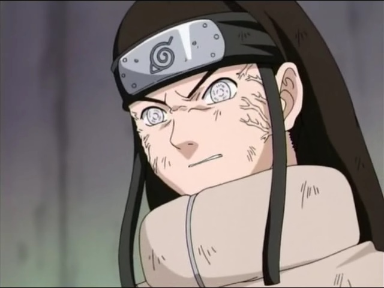

História de Neji Hyuuga

Neji era extremamente sério e maduro para a sua idade, e tinha um grande controle sobre suas emoções. Antes e durante os Exames Chūnin e sua luta com Naruto, ele era frio, e um pouco arrogante. Em seus anos mais jovens, Neji era uma criança amável, mais otimista que sorria com mais frequência. Ele ainda disse para seu pai que ele achou Hinata "bonita", quando os dois ramos do clã Hyūga se reuniram para o seu terceiro aniversário.[5]
Enquanto sob a crença de que seu pai havia morrido porque ele era um membro da casa secundária, Neji concluiu que o destino é algo decidido no momento do nascimento e que não importa o que se faça, as pessoas não podem escapar do seu destino. Neji aplicou isso muitas vezes para as pessoas que ele considerava serem mais fracas do que ele, como sua prima, Hinata. Durante a sua luta nas preliminares dos Exames Chūnin, Neji disse a Hinata que ela era imprópria para ser um ninja, devido a ser muito gentil e não ter confiança o suficiente. Quando ela foi finalmente capaz de transformar sua filosofia contra ele, lhe dizendo que ela acreditava que ele estava sofrendo ao tentar se tornar digno da casa principal, apesar de ele ter nascido na família secundária, Neji ficou enfurecido, e tentou atacar Hinata. Ele foi parado pelos jōnin presentes, mas Hinata, no entanto, foi deixada em um estado crítico, devido aos seus ataques anteriores.
Neji exibiu esforços semelhantes de expressar sua filosofia durante sua luta com Naruto Uzumaki que, apesar de ser golpeado repetidamente por ele, continuou a tentar e lutar com ele. Embora Neji tenha tentado mostrar para Naruto que o destino não pode ser combatido, e que alguém que é fraco permanecerá sempre fraco, Naruto não ficou disposto a aceitar essa mentalidade, argumentando que Neji, por toda a sua crença no destino, não aceita o seu próprio destino. Após Naruto derrotar Neji, ele sugeriu que, se um "fracasso" como ele pôde mudar seu destino, ele pensa que um "gênio" como Neji poderia fazer o mesmo. A partir desta experiência, Neji passou a ver a capacidade de Naruto para salvar as pessoas da "escuridão" e acreditava que ele pode salvar qualquer um, desde Naruto o salvou de sua "escuridão".
Com este exemplo de superação do "destino", bem como descobrir a verdade sobre a morte de seu pai logo depois, Neji abandonou o conceito de destino inescapável. Não mais limitado pela ideia de que ele estava preso em seu estado atual, Neji resolveu se tornar forte o suficiente para não perder nunca mais em uma batalha. Para fazer isso, ele começou a colocar mais ênfase em trabalhar bem com sua equipe e começou a valorizar a conclusão bem sucedida de uma missão e da segurança dos seus companheiros de equipe na sua própria melhoria, até mesmo incentivando Lee para continuar a perseguir o seu próprio sonho. Seu abandono do conceito de destino inescapável foi mais proeminente durante sua luta com Kidōmaru, onde, apesar de o ninja de Oto ter conhecimento do ponto fraco do Byakugan e Neji ser gravemente ferido, ele ainda foi capaz de lutar e, eventualmente, derrotar Kidōmaru, porque ele se lembrou do que Naruto tinha dito a ele.